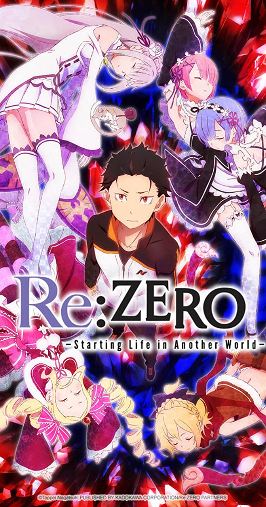

Re: Zero

Synopsis
When Subaru Natsuki leaves the convenience store, the last thing he expects is to be wrenched from his everyday life and dropped into a fantasy world. Things aren't looking good for the bewildered teenager; however, not long after his arrival, he is attacked by some thugs. Armed with only a bag of groceries and a now useless cell phone, he is quickly beaten to a pulp. Fortunately, a mysterious beauty named Satella, in hot pursuit after the one who stole her insignia, happens upon Subaru and saves him. In order to thank the honest and kindhearted girl, Subaru offers to help in her search, and later that night, he even finds the whereabouts of that which she seeks. But unbeknownst to them, a much darker force stalks the pair from the shadows, and just minutes after locating the insignia, Subaru and Satella are brutally murdered.
However, Subaru immediately reawakens to a familiar scene—confronted by the same group of thugs, meeting Satella all over again—the enigma deepens as history inexplicably repeats itself.
Information
Type: TV
Episodes: 25
Status: Finished Airing
Aired: Apr 4, 2016 to Sep 19, 2016
Premiered: Spring 2016
Broadcast: Mondays at 01:05 (JST)
Producers: TV Tokyo, Media Factory, Kadokawa Shoten, AT-X, Magic Capsule, Memory-Tech, Hakuhodo DY Music & Pictures
Licensors: Funimation
Studios: White Fox
Source: Light novel
Genres: Psychological, Drama, Thriller, Fantasy
Duration: 25 min. per ep.
Rating: R - 17+ (violence & profanity)
Back to Main Page